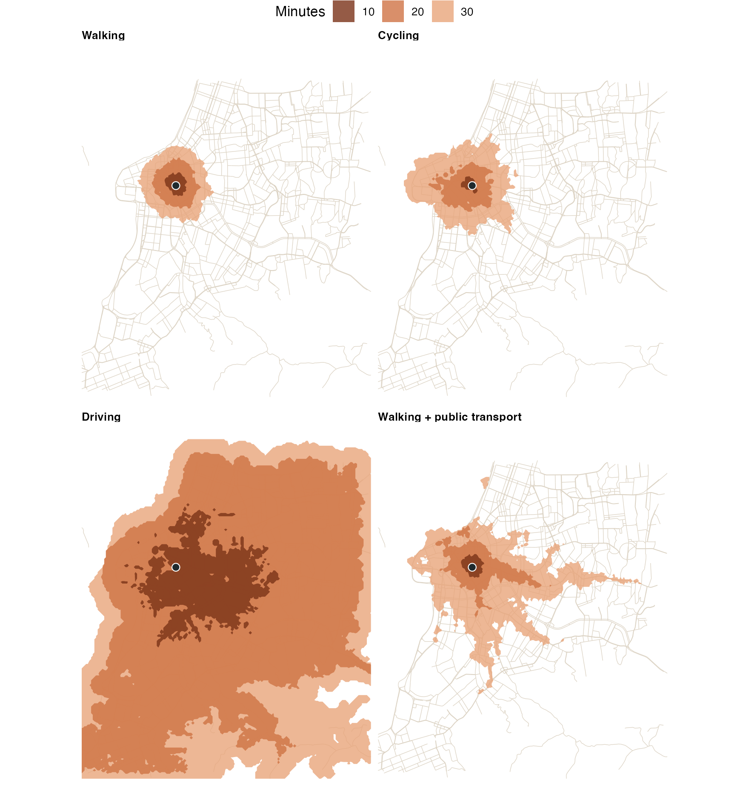

An isochrone is the area within a given travel time of a point. This example draws them for the four ways of travelling peabiru routes, from one park in Porto Alegre, and shows how far each mode gets in 10, 20 and 30 minutes. Everything below is one script; the output shown is the output it prints.
The data
The example uses the Porto Alegre sample of r5r 2.5.0: an OpenStreetMap extract of the city, the GTFS feeds of its buses (EPTC) and of its metropolitan train (Trensurb), a hexagonal grid with population, jobs and schools, and a few points of interest. The files are downloaded once, into a temporary directory (about 2 MB).
library(peabiru)
library(sf)
library(ggplot2)
poa <- file.path(tempdir(), "poa")
dir.create(poa, showWarnings = FALSE)
url <- "https://raw.githubusercontent.com/ipea/r5r/v2.5.0/r-package/inst/extdata/poa/"
for (f in c("poa_osm.pbf", "poa_eptc.zip", "poa_trensurb.zip",
"poa_hexgrid.csv", "poa_points_of_interest.csv")) {
if (!file.exists(file.path(poa, f))) {
download.file(paste0(url, f), file.path(poa, f), mode = "wb", quiet = TRUE)
}
}
network <- build_network(poa)
network
#> <peabiru_network>
#> data path: /private/var/folders/j9/7g_srh2x0d71c5q0pbj5mxh40000gn/T/RtmpX2t3Tv/poa
#> streets: 26,880 vertices, 66,652 edges
#> transit: 2 feed(s) (poa_trensurb, poa_eptc), 4,010 stops, 226 patterns, 118 services
#> elevation: NONEThe bus feed of the sample only has trips between late morning and early evening on weekdays, so public transport is routed at 14:00 on a Monday.
poi <- read.csv(file.path(poa, "poa_points_of_interest.csv"))
park <- poi[poi$id == "farroupilha_park", ]
park
#> id lat lon
#> 8 farroupilha_park -30.03675 -51.21611
departure <- as.POSIXct("2019-05-13 14:00:00", tz = "America/Sao_Paulo")Isochrones, mode by mode
isochrone() returns an sf data frame with
one polygon per origin and cutoff. The polygons are made from a grid of
travel times; zoom sets how fine that grid is (from 9 to
12; at 11 a cell is about 65 m wide here). With public transport, the
travel time of each cell is the median over the departures of
time_window, here the 30 minutes from 14:00.
modes <- list(
"Walking" = "WALK",
"Cycling" = "BICYCLE",
"Driving" = "CAR",
"Walking + public transport" = c("WALK", "TRANSIT")
)
iso <- do.call(rbind, lapply(names(modes), function(label) {
i <- isochrone(network, park, mode = modes[[label]], cutoffs = c(10, 20, 30),
zoom = 11, departure_datetime = departure, time_window = 30)
i$mode <- label
i
}))
#> Warning: sf::st_make_valid() with spherical geometry (s2) changed the area of 1
#> isochrone, of farroupilha_park (10 min). The polygons of that origin were
#> repaired on the plane instead, which leaves the area as traced;
#> options(peabiru.isochrone_repair = "spherical") keeps the s2 result.
iso$mode <- factor(iso$mode, levels = names(modes))
st_drop_geometry(iso)
#> # A tibble: 12 × 4
#> id isochrone percentile mode
#> * <chr> <dbl> <chr> <fct>
#> 1 farroupilha_park 30 p50 Walking
#> 2 farroupilha_park 20 p50 Walking
#> 3 farroupilha_park 10 p50 Walking
#> 4 farroupilha_park 30 p50 Cycling
#> 5 farroupilha_park 20 p50 Cycling
#> 6 farroupilha_park 10 p50 Cycling
#> 7 farroupilha_park 30 p50 Driving
#> 8 farroupilha_park 20 p50 Driving
#> 9 farroupilha_park 10 p50 Driving
#> 10 farroupilha_park 30 p50 Walking + public transport
#> 11 farroupilha_park 20 p50 Walking + public transport
#> 12 farroupilha_park 10 p50 Walking + public transportThe area of each isochrone, in square kilometres, sums up the picture:
iso$area_km2 <- round(as.numeric(st_area(iso)) / 1e6, 1)
xtabs(area_km2 ~ mode + isochrone, data = st_drop_geometry(iso))
#> isochrone
#> mode 10 20 30
#> Walking 0.6 2.7 6.4
#> Cycling 0.3 3.2 11.2
#> Driving 15.1 103.0 142.9
#> Walking + public transport 0.6 4.5 20.4A map
The main streets of the extract give the map some context; the isochrones are drawn from the largest to the smallest, so that the shorter times stay on top.
streets <- st_read(file.path(poa, "poa_osm.pbf"), "lines", quiet = TRUE)
streets <- streets[streets$highway %in% c("motorway", "trunk", "primary",
"secondary", "tertiary"), ]
iso <- iso[order(-iso$isochrone), ]
ggplot() +
geom_sf(data = streets, colour = "#dcd3c4", linewidth = 0.2) +
geom_sf(data = iso, aes(fill = factor(isochrone)), colour = NA, alpha = 0.8) +
geom_sf(data = st_as_sf(park, coords = c("lon", "lat"), crs = 4326),
shape = 21, size = 2.5, fill = "#1f2a2e", colour = "white") +
scale_fill_manual(values = c("10" = "#7a3318", "20" = "#cf7445", "30" = "#e8a57b"),
name = "Minutes") +
coord_sf(xlim = c(-51.25, -51.14), ylim = c(-30.11, -29.99), datum = NA) +
facet_wrap(~mode) +
theme_void() +
theme(legend.position = "top", strip.text = element_text(face = "bold", hjust = 0))
Walking covers a couple of kilometres around the park in half an hour. Cycling covers no more than walking in the first ten minutes from this park, then pulls ahead. Driving reaches most of the map within 20 minutes. Public transport sits in between, and its isochrones follow the bus corridors leaving the city centre: a stop within a short walk of the park and a fast ride extend the area far along those lines, and nowhere else.
People within reach
Polygons answer “where”; a matrix to the hexagonal grid of the sample, which carries the population of each cell, answers “how many”. The share of the city’s population reached from the park, by mode and travel time:
grid <- read.csv(file.path(poa, "poa_hexgrid.csv"))
reach <- sapply(modes, function(mode) {
ttm <- travel_time_matrix(network, park, grid, mode = mode,
departure_datetime = departure, time_window = 30,
max_trip_duration = 60)
people <- grid$population[match(ttm$to_id, grid$id)]
sapply(c(15, 30, 45, 60), function(t)
round(100 * sum(people[ttm$travel_time_p50 <= t]) / sum(grid$population)))
})
rownames(reach) <- paste("within", c(15, 30, 45, 60), "min (%)")
reach
#> Walking Cycling Driving Walking + public transport
#> within 15 min (%) 2 4 73 2
#> within 30 min (%) 12 17 100 30
#> within 45 min (%) 22 44 100 79
#> within 60 min (%) 32 69 100 98
Variations
-
Several origins. Give
isochrone()more than one point; theidcolumn tells the polygons apart. -
Streets instead of areas.
polygon_output = FALSEreturns the street segments reached, each with its travel time, instead of polygons. -
Traffic stress. Cycling uses the streets whose
level of traffic stress is at most
max_lts(2 by default) and walks the bike on the others. Withmax_lts = 4, the 30-minute cycling isochrone from the park grows from 11.2 to 34.2 km². -
Uncertainty. With
percentiles = c(25, 50, 75), public transport isochrones come in one set per percentile: the area reached on a lucky, a typical and an unlucky departure.
The figure on the home page
draws the same isochrones, styled for the documentation, with
site/figures/figures.R in the repository.